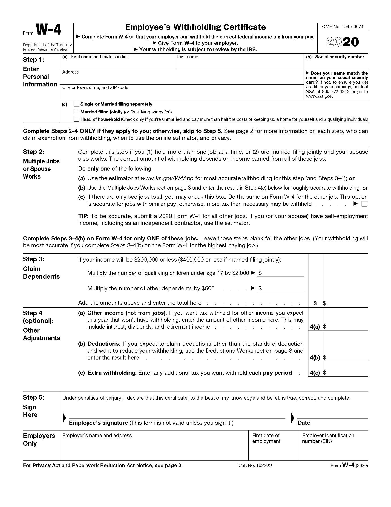

After completing your I-9, you will be asked to complete a W-4. A W-4 is a
document that tells your employer how much tax to withhold from your
paycheck.
To complete the W-4, fill out the “Employee’s Withholding Certificate.”
Enter your personal information and select your filing status. Most
youth will select the Single or Married Filing Separately box. (You may
check ‘head of household’ if you are living with your own child, but you
must be living independently and supporting yourself.)
Most youth will skip steps 2, 3 and 4. (You may want to use the
estimator at https://www.irs.gov/individuals/tax-withholding-estimator
if you have significant self-employment income like a stipend based job
in which you receive a 1099 (ie. After School Matter or rideshare job).
In this case, you may want to select to have additional funds withheld
in step 4 to cover the obligations from these positions. People often
chose to have 20% of these annual earnings withheld and divide this
total cost over the pay period. For example, if Mary earns $1,000 each
year from a rideshare job and is working as an employee in the summer
for 5 weeks. Mary would want to have 20% of the $1,000 withheld or $200.
Mary would divide that tax obligation over 5 weeks $200/5=$40 and have
$40 per week withheld in extra obligations.)
IMPORTANT: Don’t forget to complete step 5 and sign and date your W-4.
(The line below your signature will be completed by your employer.)

You can find a copy of the W-4 form online
here. If you want to figure out if the right amount is being withheld from
your paycheck, try using this
calculator.